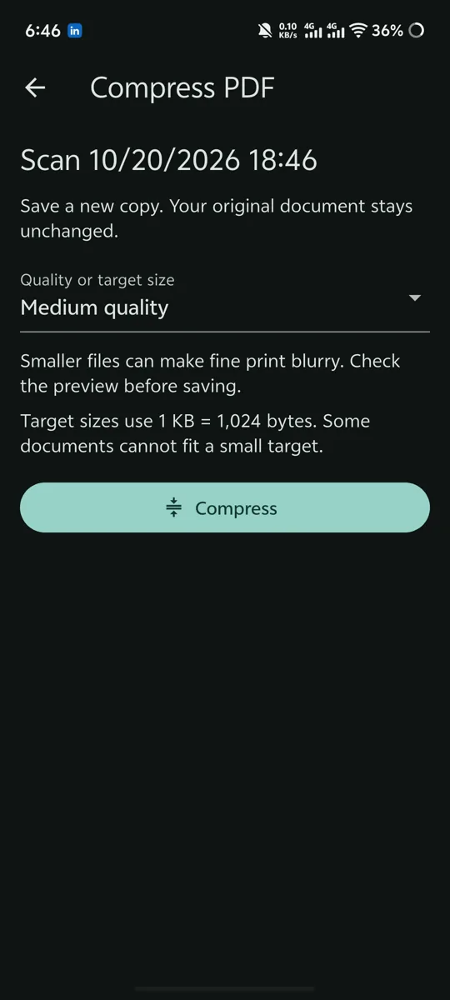

Private sourceConcept illustration · not an app screenshot
MOBILE / PROFESSIONAL CONTRIBUTION
A Flutter client for a communications platform, with authentication flows and connected mobile interfaces.
HELLO, I’M A DEVELOPER IN DHAKA
Currently · Open to full-time roles
Flutter Developer Junior Software Engineer
I build Flutter apps, connect them to APIs, and test how they behave. My work combines mobile development with hands-on software QA.
Mobile development ✳ REST API integration ✳ Backend systems ✳ Software quality
01 / SELECTED WORK
The problem, my role, and the technical decisions behind each project. These case studies cover professional contributions and independent work.
MOBILE / PROFESSIONAL CONTRIBUTION
A Flutter client for a communications platform, with authentication flows and connected mobile interfaces.

MOBILE / DOCUMENT TOOLS
An Android document scanner with local document management, PDF compression, and saved-page editing.
WEB / BUSINESS SYSTEMS
A multi-tenant pharmacy system covering product catalogs, batch inventory, purchasing, and sales workflows.
WEB / COMMERCE
A Laravel marketplace with customer, vendor, and administrator modules, plus cart and checkout services.
22 real screenshots across these apps and DocScan above. Scroll the strips to browse, or select any screenshot to open it.
Local photo tools with Riverpod, SQLite, and native Android export.
GitHub ↗Scroll to browse →
Select an image to enlarge.
Flutter board game with local multiplayer, AI difficulty, board styles, and themes.
Private sourceScroll to browse →
Select an image to enlarge.
Flutter interfaces for accessible-place discovery, maps, packages, partners, and articles.
Private sourceScroll to browse →
Select an image to enlarge.
Flutter research interface and a separate FastAPI prediction backend.
Backend source ↗Scroll to browse →
Select an image to enlarge.
02 / A LITTLE ABOUT ME
I’m a software engineering graduate based in Dhaka, focused on Flutter development and software quality.
I’m most comfortable working in Flutter: building screens, handling state, and connecting REST APIs. I also work with Laravel and local databases when a project needs more than a mobile interface.
Testing is part of my work, too. I write test cases, check API responses, report defects, and retest fixes. I like knowing what happens when a request fails or someone takes an unexpected path through an app.
More about my backgroundI clarify the requirement and work from approved designs before building screens.
I use branches, pull requests, and feedback to keep changes clear and manageable.
I test input, authentication, API responses, and fixes before considering a task complete.
03 / SKILLS
Tools and technologies used across my projects and the development and QA work described in my résumé.
Flutter · Dart · Riverpod · Provider · Dio · REST API integration · Flutter Secure Storage
Laravel · PHP · FastAPI · Python · Authentication · API services
MySQL · SQLite · Eloquent · Local persistence · Database transactions
Postman · Swagger · Manual QA · Functional, regression, smoke, and API testing
Git · GitHub · Pull requests · Code review · Trello · Jira · Android Studio · VS Code
04 / EXPERIENCE & EDUCATION
Time Research & Innovation Ltd. · Dhaka, Bangladesh
Internship followed by a junior engineering role, working on mobile development and software QA.
American International University–Bangladesh
Major in Software Engineering. CGPA: 3.29 / 4.00.
Additional training: Cisco IT Essentials.
OPEN TO FULL-TIME OPPORTUNITIES
I’m looking for Flutter, junior software engineering, and QA opportunities. Tell me what you’re working on and how I could help.
iftakherahmedrakib09@gmail.com